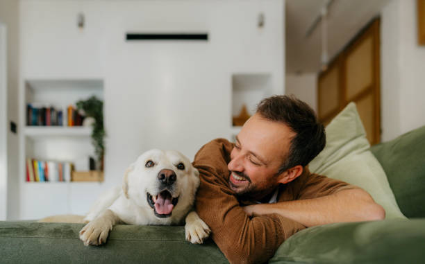

Paseos
Una opción para que la mascota salga a caminar acompañada por un cuidador.
PetBalance es una propuesta para ayudar a los dueños de mascotas a encontrar servicios de cuidado, paseos y hospedaje.
El proyecto está pensado inicialmente para usuarios de Bogotá.
Ver los serviciosCarga un cuidador recomendado y comparte tu ubicación para ver el mapa.

Estas son algunas de las opciones que se podrían consultar desde la plataforma.
Una opción para que la mascota salga a caminar acompañada por un cuidador.
Acompañamiento para mascotas que necesitan atención en su hogar.
Una alternativa de cuidado para los días en que el dueño no puede estar en casa.
El precio de cada servicio depende del proveedor y se cobra aparte del plan de la plataforma.
Estos son los valores propuestos para las suscripciones de PetBalance.
$19.900 COP al mes
$39.900 COP al trimestre
$69.900 COP al trimestre
El plan Básico se cobra mensualmente. Premium y Business / VIP se cobran trimestralmente. Los servicios de proveedores aliados tienen un costo adicional.
Crea una cuenta de prueba o inicia sesión para usar el registro de mascotas.
Ya puedes agregar y administrar los registros de tus mascotas.
Prototipo académico: usa datos inventados. Esta página guarda información solo en el navegador; no es un sistema seguro para datos reales.
En esta sección puedes crear, consultar, editar y eliminar registros de mascotas.
Para usar el registro, primero crea una cuenta de prueba o inicia sesión.
0 mascotas
| Nombre | Especie | Edad | Raza | Indicaciones | Acciones |
|---|
PetBalance busca reunir en un mismo sitio información de mascotas, servicios, reservas y cuidadores. Esta página es una primera versión académica para mostrar la idea y algunas funciones básicas.